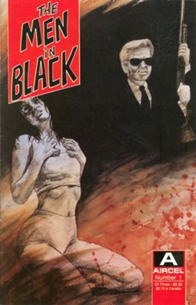

1er n° de la série BD écrite par Lowell Cunningham, et publiée par Aircel Comics ce mois-ci

Dans la cour d'un collège, une dizaine d'enfants observent une forme ovale (ou
cylindrique en fonction des témoignages) noire, décrites avec des pattes et des hublots. L'objet passe
silencieusement à 150 m environ au-dessus du collège. Les professeurs alertés n'ont rien remarqué Le 16 janvier dans une commune voisine un ballon météo lancé de Bordeaux est découvert. La reconstitution de la forme du ballon à partir des débris permet d'identifier l'observation à ce ballon, les pattes étant en fait la partie inférieure du réflecteur radarSEPRA: Cas classé A.